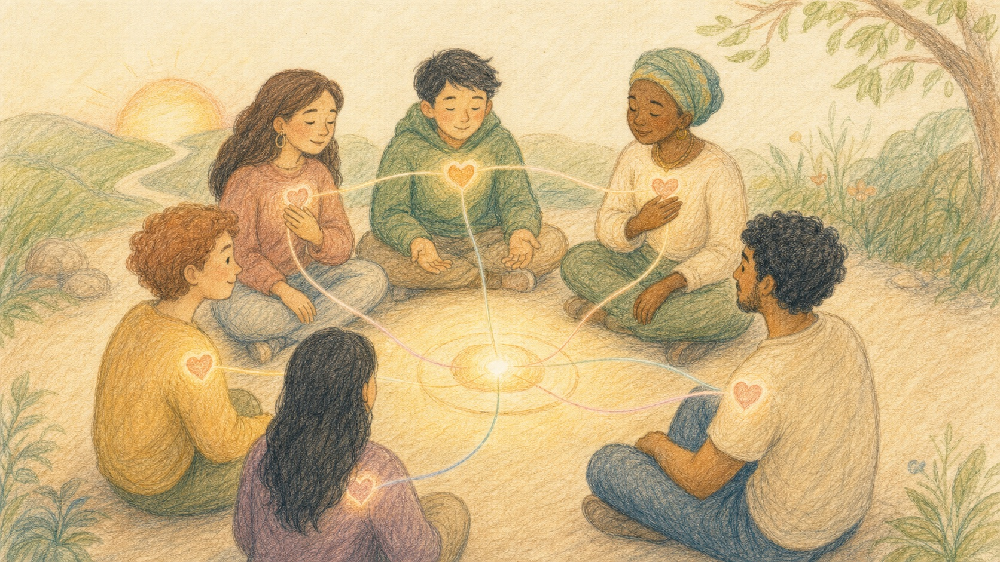

01 / Deeper Purpose
Why CoreXformer exists beyond activities and reflection

CoreXformer exists to rebuild human understanding. It creates shared situations where people notice their own behavior, recognize others more openly, and move beyond ego toward a common purpose.
Read more
The deeper purpose of CoreXformer goes beyond activities and reflection alone. In today's world, many people are increasingly isolated in subtle ways, even while surrounded by technology and constant connection. As a result, the ability to understand our own behavior, recognize the behavior of others, and relate meaningfully in shared situations has become weaker.
CoreXformer creates spaces where people come together around a common objective and experience what happens when different mindsets, emotions, habits, and perspectives meet in one place. In those moments, participants are invited to understand not only themselves, but also the inner worlds of others with greater openness and humanity.
At a deeper level, this work is also about moving beyond ego when needed. It is about recognizing that sometimes a shared objective is greater than individual resistance, pride, or personal position. Through that process, people can discover a more alive and meaningful way of being together, even without external reward.